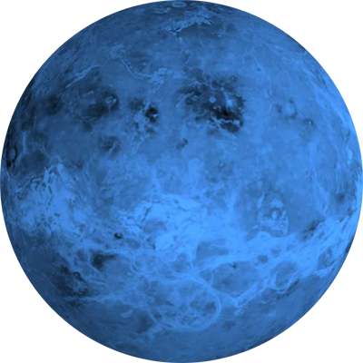

Меркурий
Меркурий — самая близкая к
Солнцу планетаСолнечной
системы.Планета названа в честь
древнеримского бога — быстрого
Меркурия,поскольку она движется
по небесной сфере быстрее других
планет.

Венера
Венера — вторая планета
Солнечной системы. Названа в
честь древнеримской богини
любви Венеры.

Земля
Земля — третья от Солнца
планета. Пятая по размеру среди
всех планет Солнечной системы.
Она является также крупнейшей
по диаметру, массе и плотности
среди планет земной группы.

Марс
Марс — четвёртая по удалённости
от Солнца и седьмая по размерам
планета Солнечной системы.
Названа в честь Марса —
древнеримского бога войны.

Луна
Луна — естественный спутник Земли.
Самый близкий к Солнцу спутник планеты,
так как у ближайших к Солнцу планет,
Меркурия и Венеры, спутников нет.